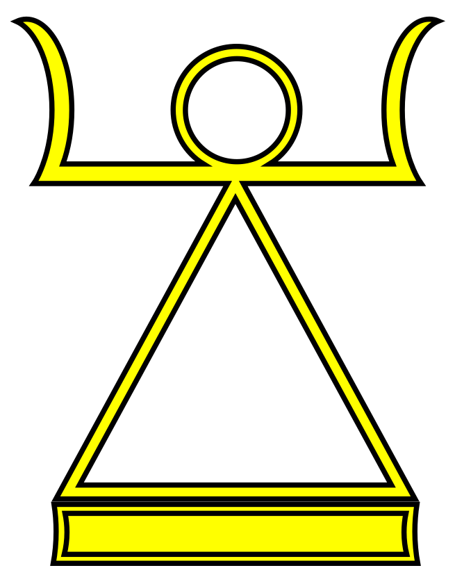

The Atlas — twenty-two volumes
Choose a country
that is gone.

Vol. I
Prussia 1525 — 1947
A kingdom of sand and discipline that built modern Germany and then was deliberately erased from the map by Allied decree. Fourteen chapters; one travel guide; four driving routes; the myths laid to rest.

Vol. II
The Ottoman Empire 1299 — 1922
Six hundred and twenty-three years across three continents. The empire that ruled Mecca, Athens, Algiers, and Belgrade — and gave way to twenty-eight successor states.

Vol. III
East Germany 1949 — 1990
The German Democratic Republic existed for forty-one years and produced its own cars, films, sportswear, and shortages. The Wall is gone; the country is not, quite.

Vol. IV
Yugoslavia 1918 — 2003
Brotherhood and unity, then seven successor states. Tito's monuments still rise from forests across the Balkans like science fiction.

Vol. V
Persia 550 BC — 1979 AD
Two and a half millennia of empire, from Cyrus the Great to the last Shah. Three writing systems, two state religions, one continuous civilisation under twenty different names.

Vol. VI
The Soviet Union 1922 — 1991
Eleven time zones; fifteen republics; one ideology. The closed cities, the metro stations, the borderlands where Soviet still hangs in the air.

Vol. VII
The Inca Empire 1438 — 1572
The largest pre-Columbian state in the Americas, run without writing, wheels, or money. Tahuantinsuyu — "the four parts together" — fell to fewer than two hundred Spaniards.

Vol. VIII
The Congo Free State 1885 — 1908
A country the size of western Europe, held as personal property by one European monarch. Twenty-three years; rubber; the most catastrophic colonial regime on record.

Vol. IX
The Roman Empire 27 BC — 1453 AD
From Augustus to the fall of Constantinople — fifteen hundred years under one name. Two capitals; two state churches; a road network that outlived the empire itself.

Vol. X
The Caliphate of Córdoba 929 — 1031
For one century, the most populous city west of Constantinople and the brightest seat of learning in Europe. A library of four hundred thousand books, then civil war.

Vol. XI
Green Ukraine 1917 — 1922
An almost-country. A Ukrainian settler republic on the Pacific, declared three times in the chaos of the Russian Civil War, swallowed by the Soviets before it could be mapped.

Vol. XII
The Kingdom of Jerusalem 1099 — 1291
A crusader state of French-speaking knights and Arabic-speaking peasants, ended at Acre with the last Frankish ship to Cyprus. Two centuries; nine kings; one Jerusalem.

Vol. XIII
The Republic of Venice 697 — 1797
The longest-lived republic in European history. Eleven hundred years of independent existence, a Stato da Mar that included Crete and Cyprus, and a constitution that defeated dynastic ambition for five centuries.

Vol. XIV
The Polish-Lithuanian Commonwealth 1569 — 1795
Two crowns, four languages, and Europe's largest country by area for most of the seventeenth century. A noble republic with an elected king — dismantled by its three imperial neighbours in three slices.

Vol. XV
Rhodesia 1965 — 1979
A self-governing British colony declared its own independence in 1965, ran for fourteen years under United Nations sanctions, and ended at the Lancaster House table to produce the country now called Zimbabwe.

Vol. XVI
Nazi Germany 1933 — 1945
Twelve years of dictatorship. The Weimar collapse, the Gleichschaltung, the camps, the war that killed sixty million people, the Berlin bunker, the trial at Nuremberg and the country that emerged in two pieces afterward.

Vol. XVII
The Holy Roman Empire 962 — 1806
Eight hundred and forty-four years of elective monarchy, three hundred sovereign principalities, the longest-lasting state in central European history — neither holy, nor Roman, nor really an empire, and yet none of those criticisms ever quite stuck.

Vol. XVIII
The Confederate States of America 1861 — 1865
Four years; eleven states; a slaveholders' republic that wrote its commitment to human bondage into its founding constitution and was destroyed by the deadliest war in American history. Six hundred thousand dead. Then Reconstruction, then segregation, then now.

Vol. XIX
Gran Colombia 1819 — 1831
Bolívar's republic. From the Caribbean to the Amazon, from Panama to Guayaquil — twelve years of liberation-era political unity that produced modern Colombia, Venezuela, Ecuador and Panama as separate states.

Vol. XX
South Vietnam 1955 — 1975
The Republic of Vietnam — the Cold War's most expensive American commitment. Twenty years; six presidents; one million combatants killed; the last helicopters off the embassy roof on the 30th of April 1975; and the long postwar.

Vol. XXI
Tibet 1913 — 1951
The Ganden Phodrang's de facto independence — proclaimed by the 13th Dalai Lama on his return from exile, sustained for thirty-eight years between the collapse of the Qing and the entry of the People's Liberation Army into Lhasa. Lhasa, the Potala, the 14th Dalai Lama's childhood, and the 17-Point Agreement of May 1951.

Vol. XXII
The Byzantine Empire 330 — 1453
The empire the Roman Empire became. Eleven hundred and twenty-three years from Constantine's foundation of Constantinople to the day the walls finally fell to Mehmed II. Greek-speaking, Orthodox, scholarly — the longest-lived state of late antiquity and the medieval Mediterranean.
Vol. XXIII
The Abbasid Caliphate 750 — 1258
The capital of the medieval Islamic world, ruling from Baghdad — the Round City built in 762, the House of Wisdom, the translation movement that preserved the Greek inheritance, and a five-century arc from the Hashimite revolution against the Umayyads to the Mongol sack of February 1258.

Vol. XXIV
The Carthaginian Empire 814 BC — 146 BC
The Phoenician trading colony that became the dominant western-Mediterranean power. Founded by Tyrian settlers in 814 BC, ruling a thalassocracy from Iberia to Cyrenaica, defeated in three Punic wars by an upstart Roman republic, and finally destroyed — house by house, with the ground sown — in the spring of 146 BC.